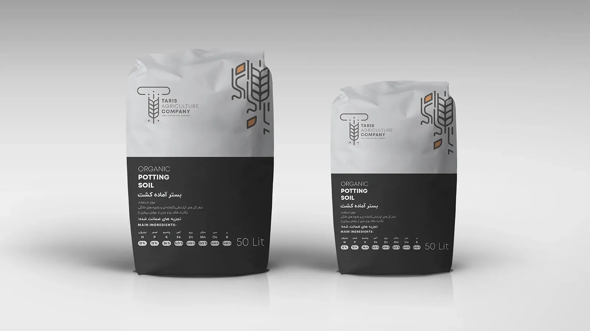
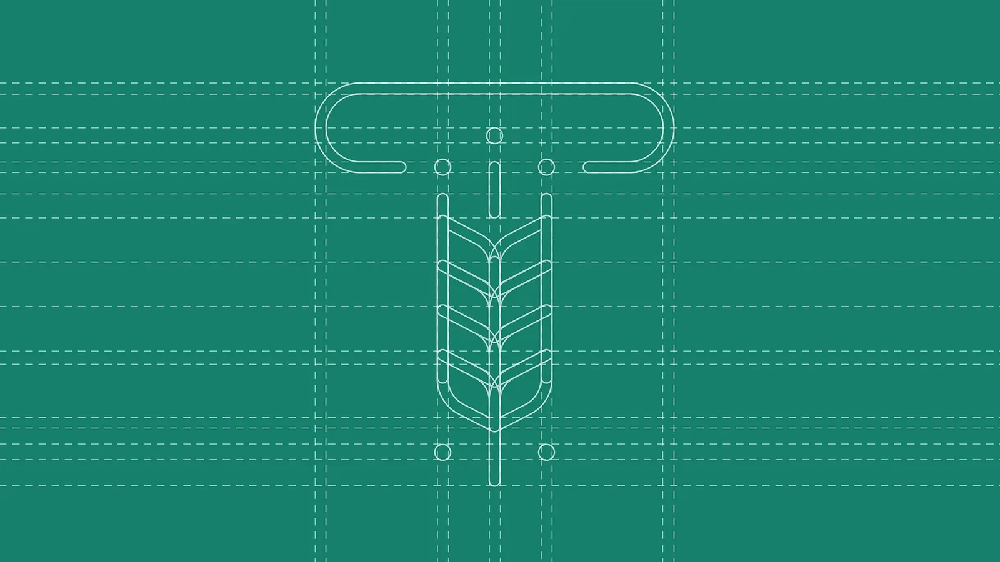
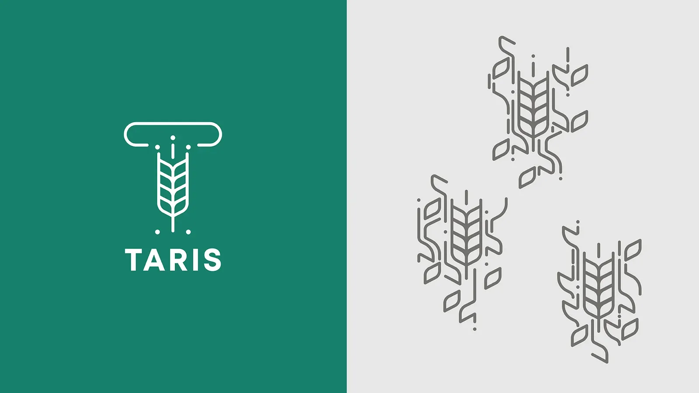
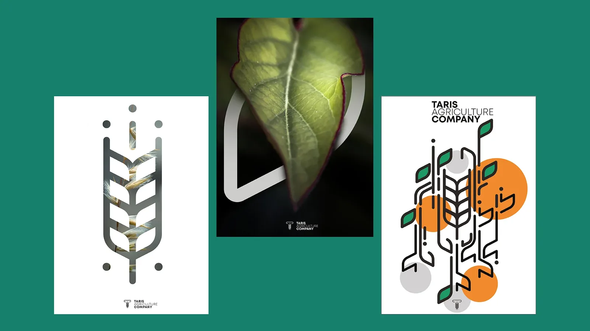
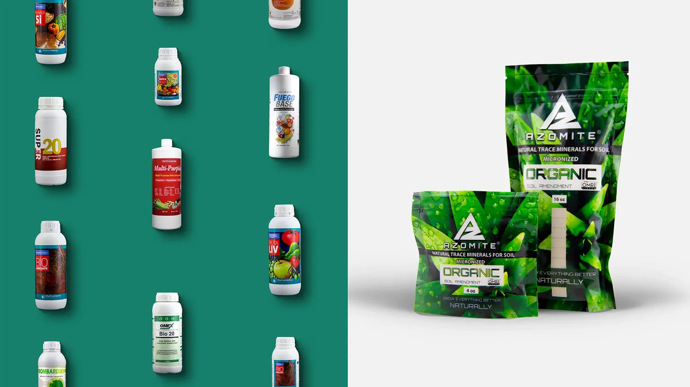
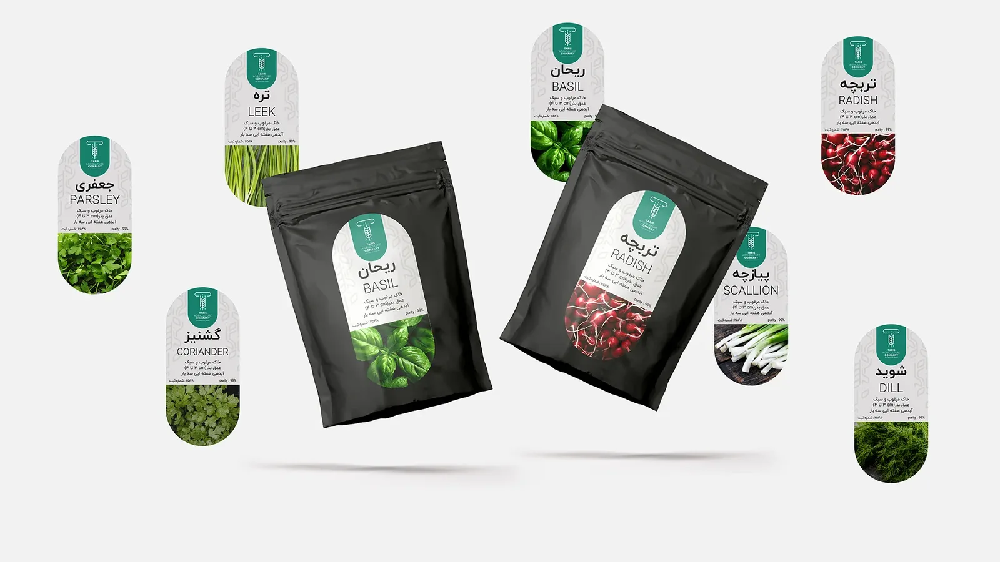
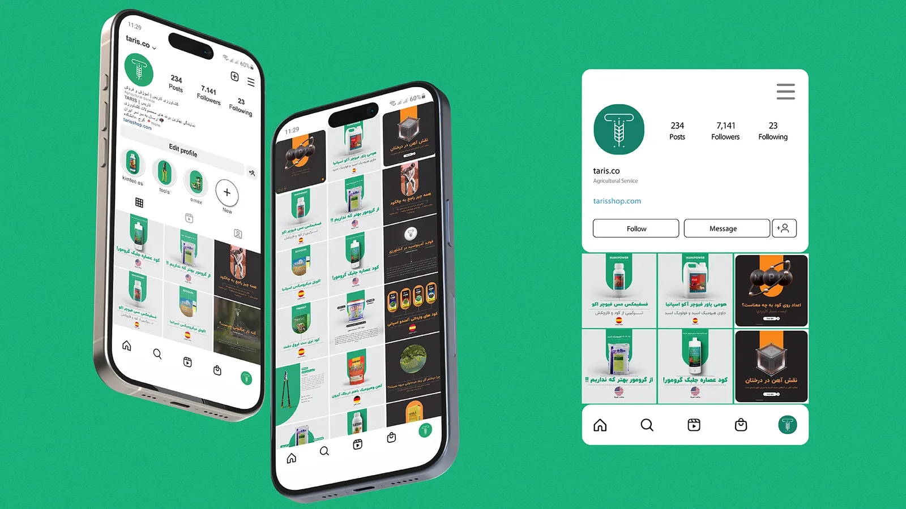
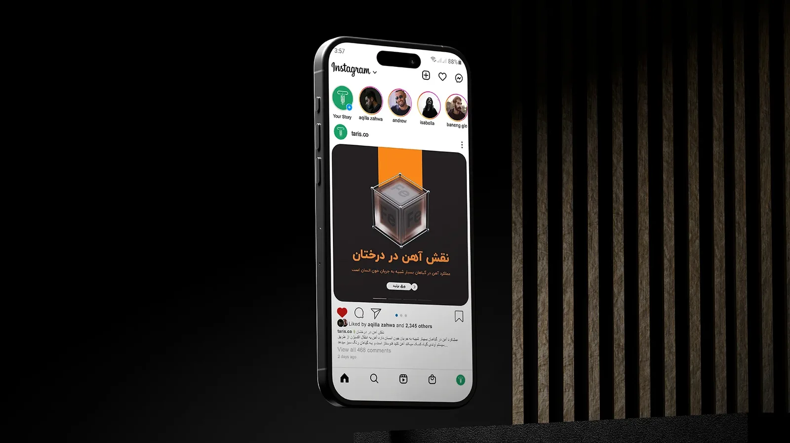
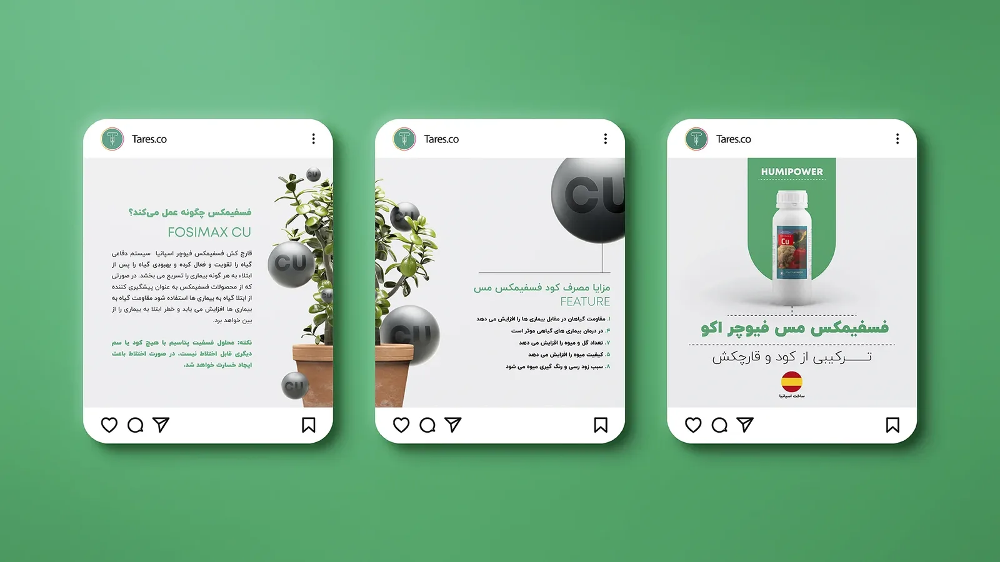
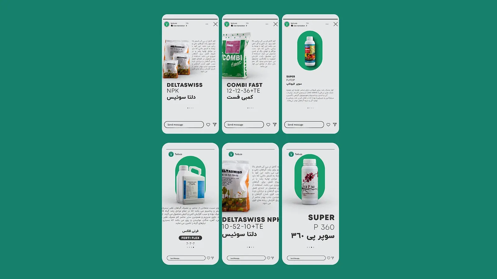

نامگذاری و هویت بصری
فروشگاه کشاورزی
این پروژه با همکاری تیمی در استودیو راندد فرم انجام شده است — اشکان ذوالقدر (کارگردان هنری) و آترین (موشن و محتوا). طراحی گرافیکی توسط سعید لوائی انجام شده است.
تاریس (Taris) فروشگاه کشاورزی تازهتأسیسی بود که به برند و حضور آنلاین از صفر نیاز داشت. در کنار تیم استودیو راندد فرم (Rounded Form Studio)، نام برند، لوگو، هویت بصری و صفحه اینستاگرام را ساختیم و عکاسی محصول را هم برای فروشگاه آنلاینش انجام دادم.








